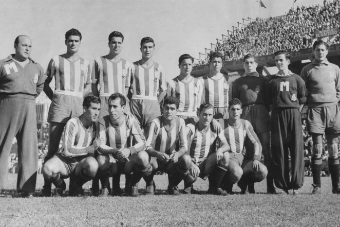
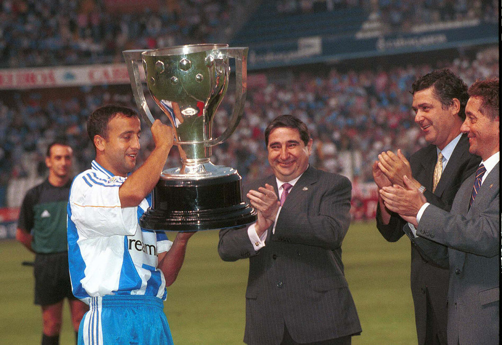

El Real Club Deportivo de La Coruña, S. A. D. es un club de fútbol español de la ciudad de La Coruña, en Galicia, que compite en Primera Federación. Fue fundado el 2 de marzo de 1906.
Disputa sus partidos como local en el Estadio de Riazor, que dispone de una capacidad de 32.490 espectadores, siendo el estadio con mayor aforo de Galicia. El Club Deportivo de la Coruña nació el 8 de diciembre de 1906, con el nombre oficial de Club Deportivo de la Sala Calvet.

Un grupo de deportistas liderado por Federico Fernández-Amor Calvet decidía crear el Deportivo de La Coruña. El primer Presidente fue Luis Cornide Quiroga. Tres años después de su nacimiento, el 4 de febrero de 1909, el rey Alfonso XIII, concedió al club el título de Real.
En la reunión de la Junta Directiva de 1 de octubre de 1908 se acordó “...trabajar activamente para conseguir que S. M. El Rey Don Alfonso XIII conceda a la sociedad el título de Real Club Deportivo de La Coruña.” Fue cuatro meses después, el 4 de febrero de 1909 cuando el objetivo se consiguió. Ese día se promulgó en Palacio una Real Orden dirigida a la Presidencia del Club Deportivo de la Sala Calvet.
La primera gran racha de resultados en la historia del club se produce entre la temporada 1948-49 y la 1956-57,con nueve años consecutivos en la máxima categoría, lo que por entonces se llamó la década de oro.
Pero cabe destacar la Primera División de la temporada 49-50
Un 4 de septiembre de 1949, el Deportivo iniciaba la Liga 49/50 con una derrota por 3 a 2 en Tarragona.El mal inicio sería compensado con creces derrotando el día 11 al Real Madrid por 3 goles a 0, tantos anotados por Marquínez en dos ocasiones y por Cheché Martín, que marcaría de espaldas a portería y tras un gran escorzo en el aire.
El Barcelona también sucumbiría en Riazor aquel año, con otro 3 a 0 en el que destacaría el extremo coruñés Tino, autor de uno de los goles. El Dépor finalizaría quinto la primera vuelta, pero un empate en Chamartín ante el Madrid hacía presagiar mejores deseos para la segunda vuelta. Con Juan Acuña injustamente sancionado tras un fortuito encontronazo con un jugador del Valladolid del que este saldría gravemente lesionado, Pita ocuparía la meta deportivista.
Esa temporada Riazor será escenario de una brillante goleada por 5 a 1 al Valencia, con goles de Tino, Ponce en dos ocasiones, Guimeráns y Franco. Cabe destacar el componente sudamericano de aquel Dépor.

Tras 18 largos años sin pasar por 1ª División, el Deportivo de la Coruña logró el ascenso directo el 10 de junio de 1991 en aquella última jornada negra para el Real Murcia donde «los pimentoneros» perdieron 2-0 en un Riazor lleno hasta la bandera.
En la campaña 91/92, el club coruñés cumplió con el guión al obtener una sufrida permanencia a través de la antigua promoción, en la que derrotó al Real Betis. Gracias a ello, pudo asentarse en la Primera División y sembrar la semilla de lo que sería un equipo de leyenda.
1992/93
Llegamos al verano de 1992. El presidente, Augusto César Lendoiro, se movió hábilmente para lograr los fichajes de los internacionales brasileños Bebeto (Vasco de Gama) y Mauro Silva (Club Atlético Bragantino), así como de jugadores míticos como Aldana (Real Madrid).
El equipo, dirigido por Arsenio Iglesias, disputó el título liguero hasta casi el final, momento en el que FC Barcelona y Real Madrid se escaparon de los coruñeses por apenas cuatro y tres puntos respectivamente.
A las novedades de aquella temporada se unieron jugadores que serían clave en el futuro Súper Depor, Liaño, Fran, Ribera, José Ramón, Claudio…entre otros. El Deportivo de la Coruña lideró la tabla liguera durante gran parte de la primera vuelta, ganando los cinco primeros partidos (entre ellos dos victorias en Riazor, una ante el Celta por 2-0 y otra ante el Real Madrid por 3-2 tras remontar un 0-2).
El nivel del Deportivo durante la temporada fue tan alto que dos de sus jugadores se llevaron trofeos individuales. El brasileño Bebeto logró el trofeo Pichichi con 29 goles arrebatándoselo al delantero chileno del Real Madrid Iván Zamorano mientras que Paco Liaño se hacía con el trofeo Zamora al haber recibido 31 goles en 37 partidos. Como premio, el club logra clasificarse para disputar la UEFA. Será la primera vez que el club coruñés dispute competiciones europeas.
1993/94
Para la temporada 93/94 el Depor logra los servicios del mediocentro brasileño Donato (Atlético de Madrid), Voro (Valencia CF) y Manjarín (Sporting de Gijón) como fichajes más destacados, la columna vertebral del equipo siguió siendo la misma.
La aventura europea acabó para los gallegos con una eliminación en octavos de final ante el Eintracht de Frankfurt quien ganó tanto en Alemania como en Riazor por 1-0. Aquello permitió al equipo centrar sus expectativas en la Liga… una Liga que estuvo a sólo 11 metros de ganarla.
El penalti de Djukic aquel fatídico 15 de mayo de 1994. El día del famoso penalti de Djukic en el último minuto. Llegaban luchando por el título el Súper Depor y el FC Barcelona. Ambos jugaban en casa y, en caso de conseguir los dos la victoria, la Liga se convertiría en la primera de la historia de los gallegos.
Muchos futbolistas, profesionales o aficionados, sueñan con tener la opción de dar a su equipo un título marcando un penalti en el último minuto. Para Djukic el sueño se convirtió en pesadilla.
Una pena máxima errada que hizo volar el título, de nuevo, a Barcelona. La eterna historia del modesto que se queda injustamente sin la gloria merecida después de haber liderado la tabla clasificatoria desde la jornada 12ª.
1999/2000
Depor campeón de Liga

Real Club Deportivo de La Coruña, S. A. D. El Deportivo es uno de los nueve clubes que se han proclamado campeones del Campeonato Nacional de Liga de Primera División,
título conquistado en la última temporada del siglo XX, la 1999-2000. Clasificandose a la liga de campeones. Ha logrado, además, cinco subcampeonatos y ocupa el duodécimo puesto histórico.

Clasificación de la Liga Actual
-¿Ves algún error en nuestra página? Haznoslo saber en SuperdeporInfo@gmail.com